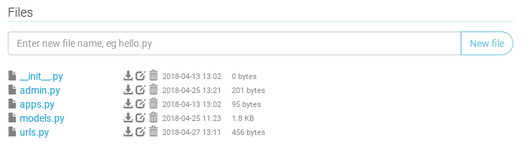
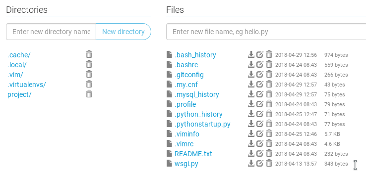
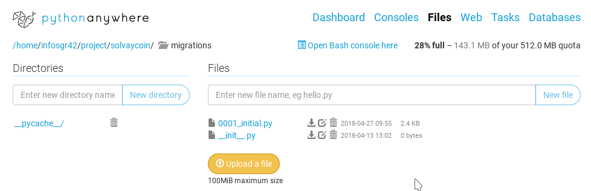
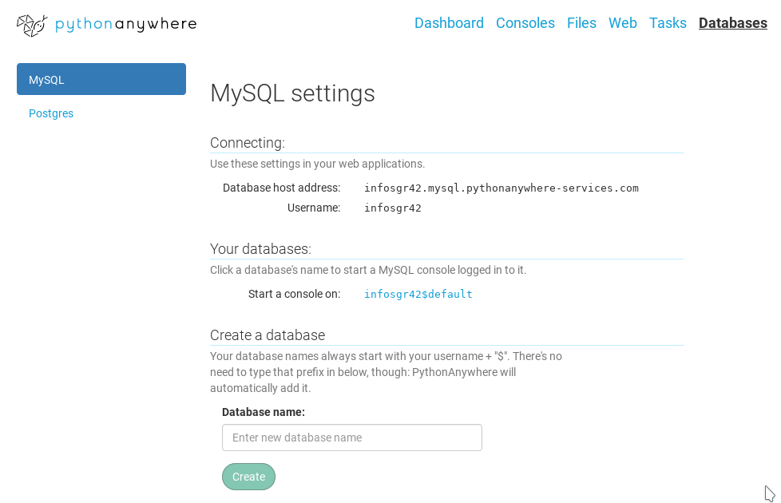

Bienvenue dans le tutoriel django, voici une liste d'exercice à faire pour bien comprendre les concepts de base de django !
Dans ce tutoriel, nous ferons un site de sondage, appelé askme, c'est une version simplifiée du tutoriel django officiel, nous serons capables de :
Créer une question.
Voir la liste des questions et cliquer dessus pour la voir en détail.
Avoir les réponses possibles à une question en cas de choix multiple.
Répondre à une question.
Voir les résultats d'une question.
Bien séparer les questions par catégories (Sport, Sciences, Culture).
Ne voir que les résultats quand la date de fin est passée.
Limiter la création des questions aux administrateurs.
Les paragraphes en italique indiquent une information complémentaire non nécessaire pour la compréhesion et la réussite du cours, bien entendu, ça peut toujours aider.
C'est un peu comme une section « Pour en savoir plus ».
Pour faire un site économique du style, marketplace,
on choisira un nom comme funnycoin et non askme, on y verra quelques opérations de base du même style dans ce but.
Une petite connaissance préalable de python est conseillée, vous pouvez avoir un petit rappel de théorie sur mon site
de programmation pour débutants :
Cliquez sur le petit fichier qui tient sur deux pages
theorie1
ou bien regardez ou sa vidéo en bêta !
Ensuite, essayez de faire les exercices 0, 1, 2, 3, voire 4.
Ensuite lisez le fichier
theorie2
qui tient aussi sur deux pages,
essayez de faire au moins l'exercice 5, mais vous pouvez tenter les 6, 7, 8, 9.
Finalement si vous êtes chaud, lisez le fichier
theorie3
qui tient peut-être sur plus de deux pages.
Et si vous êtes encore plus chaud, vous pouvez même lire les parties Pour en savoir plus
ou bien mes fichiers dont les noms commencent par progra !
Lors de mes présentations, j'ai parlé du protocole http, et de la communication entre client et serveur qui ressemblait à un envoi de lettres postales.
Maintenant, place au code django !
Créez un projet django vide, si vous avez du mal, demandez à vos voisins !
J'ai quelques machines virtuelles sous la main si vous voulez facilement vous lancer,
ou bien vous pouvez simplement créer un compte sur pythonanywhere.com que vous soyez sous Windows ou Mac.
Essayez de faire les exercices. Ensuite, si vous n'arrivez pas, regardez la solution en cliquant sur les boutons !
Si nous n'arrivez pas à faire un exercice, pas de panique, la correction est là pour vous aider et probablement que vous comprendrez mieux lors d'un exercice ultérieur.
Dernière petite remarque : Django est vaste, il permet souvent de faire une chose de beaucoup de manières différentes,
ici je me concentre sur les fonctionnalités que je juge fondamentales, indispensables pour la création d'un site web.
Exerci{{c|s}}e 1{{ |}}: Les urls et les vues
Lancez le serveur.
Pour faire cela sur pythonanywhere, c'est déjà configuré et vous devez juste cliquer sur Reload dans l'onglet Web de pythonanywhere.
Que se passe-t-il quand je vais sur 127.0.0.1:8000/ ?
Si vous êtes sur pythonanywhere, vous devrez plutôt aller sur infosgr42.pythonanywhere.com/
en remplaçant bien infosgr42 par votre propre nom d'utilisateur, du coup
entrez votre nom d'utilisateur :
puis cliquez sur pour mettre à jour la page.
Page mise à jour pour {username} !
Il est marqué It works et la petite fusée de Django est affichée.
Et quand je vais sur 127.0.0.1:8000/hello ?
Erreur 404, et on voit la liste des urls disponibles, il n'y a que admin/
Première url
Faites une page à l'url /hello, qui va afficher Coucou les amis !
Pour cela, vous devrez modifier (ou créer) le fichier urls.py qui se trouve dans le dossier de votre app (dossier askme/).
Pour créer un fichier dans pythonanywhere, naviguer dans le bon dossier, puis à droite où il est marqué Enter new filename, écrivez urls.py (attention, avec l'extension.py)
et appuyez sur Enter.

Ensuite, vous n'avez qu'à cliquer sur le fichier et un éditeur de texte apparaîtra, n'oubliez pas de Sauver le fichier après modification en cliquant sur Save
en haut à droite de l'écran.
Sur pythonanywhere, quand vous modfier un fichier de code, vous devez souvent Reload le serveur, allez dans l'onglet Web et cliquez sur le gros bouton Reload.
from django.urls import path
from . import views
urlpatterns = [
path('hello', views.dire_bonjour),
]
On dit donc que quand on va sur l'urlhello/,
on va dans views.dire_bonjour, il faut donc aller dans views.py et y définir dire_bonjour.
Vous devrez donc également modifier (ou créer) le fichier views.py qui se trouve dans le même dossier.
Remarquez que certains projets utilisent un dossierviews/, dans ce cas, suivez ces instructions,
on y verra :
from django.http import HttpResponse
def dire_bonjour(request):
return HttpResponse("Coucou les amis !")
Attention à la version de django, ce tutoriel est sous django 2.0, mais certains tutoriels sont encore en 1.11 où déjà la première ligne de urls.py
est différente.
Si on a vraiment beaucoup d'urls, vous pouvez choisir de ne pas faire un
fichierviews.py
mais d'avoir un dossierviews/,
dans ce cas vous devez créer un (ou plusieurs) fichier(s) .py dans le dossier views/,
comme par exemple base.py, vous devrez alors écrire urls.py comme ceci :
from django.urls import path
from . import views
from .views import base
urlpatterns = [
path('hello', views.base.dire_bonjour),
]
from django.http import HttpResponse
def dire_bonjour(request):
return HttpResponse("Coucou les amis !")
Que se passe-t-il maintenant quand je vais sur /hello ?
On voit Coucou les amis !
Et quand je vais sur /superapp ?
Une erreur 404
Une autre url
Je vous ai montré une url en exemple, donc mainteant à vous d'en faire une autre,
j'aimerais que quand on va sur /cv, on y voit :
Cv de René : Surfeur, programmeur mais humain avant tout
from django.urls import path
from . import views
from .views import base
urlpatterns = [
path('hello', views.base.dire_bonjour),
path('cv', views.montrer_cv),
]
from django.http import HttpResponse
def dire_bonjour(request):
return HttpResponse("Coucou les amis !")
def montrer_cv(request):
return HttpResponse("Cv de René : Surfeur, programmeur mais humain avant tout")
Quand on va sur l'url/cv, on va dans la fonctionmontrer_cv qui se trouve dans views.
Petit rappel, def définit une fonction comme dit dans theorie3.
Le fichier contient donc maintenant deux fonctions, dire_bonjour et montrer_cv, on peut en créer autant que l'on veut.
Remarquez que j'aurais également pu appeler mes fonctions hello et cv
en écrivant def hello(request) et def cv(request) dans views.py
pour que chaque fonction aie le même nom que son url, mais j'ai préféré faire la différence.
Exerci{{c|s}}e 2{{ |}}: Du html !
Comment mettre par exemple René en gras ?
from django.http import HttpResponse
def dire_bonjour(request):
return HttpResponse("Coucou les amis !")
def montrer_cv(request):
return HttpResponse("Cv de <strong>René</strong>: Surfeur, programmeur mais humain avant tout")
Remarquez maintenant qu'il y a une différence entre ce qu'on a envoyé (le code html) et ce qui est affiché à l'utilisateur par le navigateur (la page).
Faites un clic droit sur la page et cliquez sur Afficher la source, vous verrez le html qu'on a envoyé.
Pour afficher la source, sous Google Chrome ou Firefox, il existe le raccourci Ctrl+U ou ⌘ Cmd+U sous Mac,
si vous êtes sous Safari et que vous ne voulez pas télécharger Google Chrome,
allez dans les options avancées
et activez montrer l'url en entier (tout en haut) et montrer les outils de développement
(tout en bas) ce qui fera que vous pourrez y accéder avec un clic droit.
Et comment lister ses compétences dans une liste comme celle-ci :
Surfeur
Programmeur
Humain avant tout
def montrer_cv(request):
return HttpResponse("Cv de <strong>René</strong>: <ul> <li>Surfeur</li> <li>Programmeur</li> <li>Mais humain avant tout</li> </ul>")
Exerci{{c|s}}e 3{{ |}}: Un template pour René
Cela devient un peu confus de mettre des données dans le code python, vous imaginez bien que tout un article de blog n'a rien à faire
dans un fichier python.
Comment faire un document html séparé ?
from django.shortcuts import render
def montrer_cv(request):
return render(request, 'le_cv.html')
Cv de <strong>René</strong>
<ul>
<li>Surfeur</li>
<li>Programmeur</li>
<li>Mais humain avant tout</li>
</ul>
Attention à ce que le fichier html soit dans le dossier templates/ et veillez à ce que
INSTALLED_APP dans settings.py contient bien 'askme.apps.AskmeConfig' :
Remarquez, qu'en html, on peut passer à la ligne autant que l'on veut et rajouter des espaces pour rendre le document plus clair.
Si l'on veut passer à la ligne dans le document, on crée simplement un nouveau paragraphe avec <p> fermé par </p>.
L'outil qui a fait du web une révolution, c'est le lien, faites un petit lien vers notre autre page à l'url /hello !
Allez voir <a href="/hello">ici</a> ma super page
et j'espère que je vous ferai sourire !
Possibilités d'html
Afin que notre page soit plus jolie, on peut apprendre d'autres balises html, si vous
voulez garder un site peu joli mais passer directement au côté fontionnel passez cette section,
sinon voici un aperçu de ce qu'un
bon tutoriel html
dans son
premier chapitre
vous dira :
Il est plus structuré de mettre le tout dans une balise <html>
qui contient une balise <head> et <body>,
de mettre des paragraphes <p>
de telle sorte que le document soit maintenant :
Toute cette structure peut être retrouvée en ouvrant les outils de développement,
faites un clic droit puis Inspecter ou sous Google Chrome et Firefox Ctrl+Shift+I.
Vous pouvez ensuite balader votre souris pour voir les correspondances entre le html et les blocs.
Certaines balises html comme <li> ou <p>ont le droit
d'omettre leur tab de fin dans certaines situations très courantes.
On lira dans
la référence
de <li> :
{{ La balise de fin peut être absente si l'élément est immédiatement suivi par un autre élément <li> ou s'il n'y a plus d'autre contenu dans son élément parent.
| The end tag can be omitted if the list item is immediately followed by another <li> element, or if there is no more content in its parent element. }}
En d'autres mots,
si vous avez un </li> directement suivi d'un <li> ou de la fermeture de liste comme </ul>,
vous pouvez omettre le </li>.
Ce qui fait que cette liste est du html tout à fait valide :
<ul>
<li>Surfeur
<li>Programmeur
<li>Mais humain avant tout
</ul>
Ce qui ressemble vachement au résultat !
Surfeur
Programmeur
Mais humain avant tout
Pour <p>,
c'est en gros la même chose,
si vous avez un </p> directement suivi d'un <p>,
vous pouvez omettre le </p>, rendant ce code valide :
<h1>Cv de René</h1>
<p>René est un expert depuis le début de sa vie.
<p>Il a rencontré Chuck Norris
et a compté jusqu'à l'infini avec lui,
deux fois.
<p>Il a beaucoup de hobbies.
Cependant, on recommande aux débutants de toujours fermer ses balises car ils trouvent ça généralement plus clair.
Quant aux balises ne devant pas être fermées comme <meta charset="utf-8"> ou <img src="hello.png">,
on aime marquer un slash comme ceci <meta charset="utf-8" />
ou <img src="hello.png" />
pour rappeler aux lecteurs qu'il n'y aura pas de balise de fermeture,
ainsi si vous voyez une balise qui finit par />, vous savez qu'il n'y aura pas de balise fermante plus loin.
Finalement, on aimerait que tous les paragraphes soient en bleu, on a besoin de CSS !
<html>
<head>
<meta charset="utf-8"/>
<title>René le magnifique</title>
<style>
p {
color: blue;
}
</style>
</head>
<body>
...
</body>
</html>
Remarquez que vous pouvez nommer votre fichier html comme vous le voulez, même si c'est le même nom que les fonctions ou les urls.
Pour en savoir plus sur l'html et le css, direction le très bon
tutoriel html et css
sur openclassrooms.
En une ou deux heures vous aurez déjà de quoi faire un joli site web !
En effet, avec beaucoup de css, René pourrait arriver à un cv comme celui-ci.
D'autres tutoriels existent bien entendu, comme celui de Mozilla
disponible en plein de langues.
Remarquez que si sur pythonanywhere
vous utilisez les images,
il faudra les uploader et ensuite configurer vos urls statiques, google est votre ami.
Petite remarque si vous googlez du html ou css,
n'allez pas
sur le site w3schools.com,
la qualité y est médiocre, il n'apparaît en premier dans la liste de Google que
parce qu'il est très vieux et trop concis.
Préférez un autre résultat dans la liste, même si c'est le deuxième,
ce sera probablement
le MDN
ou bien entendu
stackoverflow.
Je dis également en passant que DuckDuckGo
est en général meilleur que Google pour rapidement trouver une
réponse sur stackoverflow, et en plus il respecte votre vie privée.
Trop concis fait qu'en général oui, on a l'information qu'on cherche
mais rien d'autre n'est expliqué, ce qui fait qu'on n'apprend quasi rien et vous reviendrez vite sur google avec une autre question.
Mais surtout, le gros
problème avec w3schools est que l'on pourrait croire que c'est un site officiel
lié à w3.org
qui est l'organisme qui régit les standards du web (plus officiel que ça, tu meurs)
alors que non.
En 2011, un site a été écrit analysant la médiocrité de w3schools,
qui du coup, s'est légèrement amélioré mais reste bien médiocre.
Avoir un joli site c'est bien, mais avoir un site fonctionnel c'est peut-être bien aussi !
Rendez-vous dans la suite du tutoriel.
Un avantage des templates est de séparer le fond, la forme, et les données.
Un designer pourra par exemple écrire un template html avec du joli css, et vous n'aurez qu'à l'inclure dans votre projet
sans même devoir regarder le code source.
Un template django peut avoir des variables
Cependant, un template est plus qu'un simple fichier, il peut demander des variables !
<p>Cv de <strong>René</strong></p>
<p>J'ai mangé {{ x }} pommes dans ma vie</p>
<ul>
<li>Surfeur</li>
<li>Programmeur</li>
<li>Mais humain avant tout</li>
</ul>
Quand on écrit le template, il nous manque une information, le créateur du template a simplement dit J'ai mangé X pommes où X est une variable.
Pour indiquer qu'on a une variable dans le template et pas du simple texte, on l'entoure de double accolades,
donc ici {{ x }}.
Ensuite, il faudra bien entendu donner sa variable x au template :
La page affichée indiquera J'ai mangé 52 pommes dans ma vie,
n'hésitez pas voir le code source de la page avec Ctrl+U
pour voir que le browser n'est pas au courant qu'on utilise des templates.
Attentions aux majuscules, comme en python 'x' ≠ 'X' !
Évidemment, on peut créer une variable python
et puis l'envoyer au template :
def montrer_cv(request):
a = 52
return render(request, 'le_cv.html', {
"x": a,
})
Python étant python, on peut bien sûr faire des calculs dessus :
def montrer_cv(request):
a = 52
b = 1 + a * 2
return render(request, 'le_cv.html', {
"x": b,
})
def montrer_cv(request):
a = 8
b = 2
return render(request, 'le_cv.html', {
"x": "vraiment beaucoup de",
"y": b,
"wow": a ** 2,
})
<p>Cv de <strong>René</strong></p>
<p>J'ai mangé {{ x }} pommes dans ma vie</p>
<ul>
<li>Surfeur, gagnant de {{ y }} compétitions</li>
<li>Programmeur, avec un grand total de {{ wow }} likes sur stackoverflow</li>
<li>Mais humain avant tout</li>
</ul>
Le template peut accepter plein d'autre type de variables, mais nous verrons son
utilité principale dans le chapitre suivant !
Pour en savoir plus sur les templates, je conseille surtout l'héritage avec {% extends %}
qui est une très bonne façon d'organiser ses templates. Plus d'informations sur la documentation officielle.
Raccourcis clavier
{{Sérieusement, qui a besoin d'une souris quand il édite du texte ?|Seriously, who needs a mouse when editing text?}} — Robert Vanden Eynde
{{La souris, c'est lent... Mais le pad ? C'est pire !|The mouse, that's slow... But trackpad? That's wooorse!}} — Robert Vanden Eynde
À partir du moment où vous écrivez beaucoup de texte, lisez au moins mon petit tableau des raccourcis basiques qui marchent même sur facebook et
même sous Mac !
Lire la base de données via un modèle Django
Nous allons maintenant faire un site web dynamique,
le site web statique est un serveur qui fait toujours la même chose :
Attendre une requête http.
Lire l'url comme /hello.
Voir s'il existe un fichier appelé hello.
Si le fichier n'existe pas, renvoyer une 404 Not Found (status = 404).
Sinon, renvoyer le contenu du fichier (status = 200).
Un site dynamique...
attendra toujours des requêtes http (car c'est toujours un serveur http),
lira toujours l'url (car c'est toujours un serveur http),
mais à la place de prendre simplement un fichier et le donner,
il va appeler du code (ici du code écrit en python).
Le code permet de faire strictement tout et n'importe quoi (comme faire un calcul).
Et finalement, étant un serveur http, il renverra quand même une réponse texte (ou html) avec un status (200 ou 404 par exemple).
On dira donc que la différence est que la réponse sera générée.
Généralement, on lira du contenu dans une base de donnée et on renverra du html qui dépend du contenu de celle-ci.
Exerci{{c|s}}e 4{{ |}}: Une question
Pour notre site de sondage, créez une class Question qui a deux attributs :
nom: le nom de la question, comme Quel est votre fruit préféré ?
repondants: le nombre de personnes ayant répondu à cette question, qui sera initialement de zéro mais augmentera.
Pour le projet économique type marketplace, vous pouvez vous entraîner en créant une classe Question comme décris dans le tutoriel,
ou bien vous pouvez créer une classe Listing (ou Offre) qui contient les attributs demandés en cours, c'est à dire
montant_fixe (un nombre),
montant_variable (un nombre),
devise_fixe (une Devise, comme EUR)
et devise_variable (une autre Devise, comme BTC).
En effet, une Offre se décrit en français comme je propose un échange 5BTC contre 10EUR.
Dans cet exemple on a montant_fixe = 5; montant_variable = 10; devise_fixe = "BTC"; devise_variable = "EUR".
Une Offre est également liée à un objet User (utilisateur) mais pour l'instant nous ne le mettrons pas,
nous ferons ça dans la partie Bases de données relationnelles.
Avec les bases de données relationnelles, les devises seront également des objets Devise mais pour l'instant nous pouvons simplement dire que les devises
sont des chaînes de caractères comme "EUR" (string ou str en python, CharField en django).
On devra donc modifier le fichier models.py :
from django.db import models # on a besoin du concept django de modèle
class Question(models.Model): # cette classe est un modèle django et non une simple classe Python
nom = models.CharField(max_length=50) # cet attribut est du texte (Character Field)
repondants = models.IntegerField() # cet attribut est un nombre entier
Ensuite, effectuez l'opération de makemigrations suivi de l'opération de migrate,
et probablement qu'il y aura une erreur (voir ci-dessous).
Si vous vous demandez quelle est la différence entre makemigrations et migrate, lisez ceci :
makemigrations va regarder les changements faits dans models.py et va créer un fichier python dans le dossier migrations, qui décrit les différences, en l'occurence ici, on crée une nouvelle table qui contient deux attributs.
migrate modifie effectivement la base de données, en l'occurence ici va créer une nouvelle table, on verra plus tard ce qu'il peut arriver à ce moment-ci.
Sur pythonanywhere, vous devrez passer par la console, activez le virtualenv si ça n'est pas déjà fait,
puis lancez cette commande :
python manage.py makemigrations
De la même manière, pour faire l'opération de migrate on écrira bien sûr python manage.py migrate.
Voici toutes les erreurs qui peuvent arriver :
Si vous avez l'erreur can't open file 'manage.py': No such file or directory, c'est que vous n'êtes pas dans le bon dossier et probablement qu'un petit cd project
résoudra le problème :
Sur pythonanywhere, on va utiliser des consoles linux (aussi appelés terminal, shell ou sh ou bash ou invite de commande),
car ça permet non seulement d'avoir l'air d'un pro mais surtout car ça permet de nous simplifier la vie une fois qu'on y est habitué.
Le compte gratuit de pythonanywhere que vous avez permet d'ouvrir uniquement 2 consoles, dans l'onglet Console du site, vous voyez la liste des consoles ouvertes,
vous pouvez cliquer dessus pour y accéder, cliquez sur la petite croix pour fermer (kill) la console que vous voulez.
Quand vous lancez une console, vous êtes dans votre dossier home,
c'est le dossier principal de tout utilisateur linux,
quand vous allez dans l'onglet Files, c'est le dossier que vous voyez,
en console linux, on l'appelle tout simple home, $HOME ou encore ~.
Chaque utilisateur linux a son petit dossier home, qui se trouve dans /home/username, sur pythonanywhere votre nom d'utilisateur est infosgr42 donc votre home se
trouve dans /home/.
En lançant une console linux, on nous voyons l'heure et un petit symbole $ :
14:00 ~ $
Pour savoir où vous êtes, tappez pwd (Print Working Directory)
14:01 ~ $ pwd
/home/infosgr42/
Pour voir les fichiers qu'il y a dans votre dossier en cours, tappez ls (lister les fichiers, ou lets see) :
14:02 ~ $ ls
README.txt project wsgi.py
Nous avons donc un fichier README.txt, un dossier project, et un fichier wsgi.py, ce qui correspond bien à
la réalité :

Remarquez qu'en linux, un fichier qui commence par un point est considéré comme caché,
c'est pourquoi ls ne les montre pas,
mais vous pouvez quand même les voir en effectuant ls -a.
Pour avoir un affichage plus joli en couleurs, tappez ls x--color, vous y verrez les dossiers en bleu.
Il y a moyen que tous vos ls soient en couleurs en écrivant alias ls='ls --color'.
Pour changer de dossier, en allant par exemple dans le dossier project/ tappez cd project (cd comme changer dossier).
14:03 ~ $ cd project
14:04 ~/project $
Remarquez que la console vous rappelle que vous êtes dans le dossier ~/project, ce qui veut dire le dossier project dans votre home.
Pour aller dans votre home, tappez juste cd :
14:05 ~/project $ cd
14:06 ~ $
Pour les intéressés, je conseille le tutoriel linux sur openclassrooms.
Si vous avez une erreur liée à la version de python ou version de django, comme par exemple à la ligne from exc, il y a un souci de virtualenv :
Beaucoup d'installations python utilisent le concept de virtualenv qui permet de gérer des versions de python, sur python anywhere par défaut,
on a python 2.7 ou python 3.6 muni de django 1.11, or on veut django 2.0,
on va donc créer un virtualenv avec python 3.6 et django 2.0, nous allons l'appeler django2.
Sur pythonanywhere, on va utiliser une console linux (aussi appelée terminal, shell, sh , bash ou invite de commande),
car ça permet non seulement d'avoir l'air d'un pro mais surtout car ça permet de nous simplifier la vie une fois qu'on y est habitué.
Le compte gratuit que vous avez permet d'ouvrir uniquement 2 consoles, dans l'onglet Console du site, vous voyez la liste des consoles ouvertes,
vous pouvez cliquer dessus pour y accéder, cliquez sur la petite croix pour fermer (kill) la console que vous voulez.
Pour lancer une console, allez dans l'onglet Web, descendez un peu, et cliquez sur lancer une console dans ce virtualenv,
ou bien réutilisez une console déjà lancée via la liste dans l'onglet Console.
Dans votre console, pour savoir si vous êtes dans le virtualenv, lancez la commande suivante :
which python
Si vous voyez /usr/bin/python c'est que vous n'êtes pas dans le virtualenv.
Si vous voyez quelque chose qui contient .virtualenv vous êtes dedans.
Pour activer un virtualenv sur pythonanywhere, il faut d'abord le créer, lancez cette commande :
mkvirtualenv django2 --python=/usr/bin/python3.6
Cela va créer votre virtualenv, ensuite il faut l'activer :
workon django2
Par la suite, si vous voyez que vous n'êtes pas dans le virtualenv (car which python vaut /usr/bin/python),
vous pouvez juste l'activer avec workon django2.
Une fois dans le virtualenv, la commande python pourra être utilisée correctement
vérifiez que vous avez bien python 3.6 en tappant python --version et vérifiez que vous avez bien django version 2 en tappant python -m django --version.
Il existe aussi d'autres comandes utiles comme pip ou django-admin que nous n'utiliserons pas pour notre tutoriel.
Indice de virtualenv
Dans votre console, si le texte affiché est comme une de ces trois lignes-ci :
12:00 ~ $
12:00 ~/dossier $
user@host ~/dossier $
... c'est que vous n'êtes pas dans le virtualenv, il faut avoir une ligne comme celles-ci :
Si la ligne commence par un nom entre parenthèses, c'est que vous êtes probablement dans le bon virtualenv, seul which python pourra vous le dire pour sûr.
Dans les exemples ici j'étais dans le virtualenv appelé django2.
Erreurs de python : Probablement que vous avez fait une erreur de Syntaxe ou une autre erreur python,
dans ce cas, lisez bien le fichier et le numéro de ligne, par exemple,
essayez de faire une faute de frappe et d'écrire CarField à la place de CharField et l'opération vous dira
il y a une erreur dans le fichier models.py à la ligne 5 par exemple.
Si sur pythonanywhere vous avez une opération Access denied, vérifiez ces deux choses :
Dans le fichier settings.py (~/project/mysite/settings.py), vérifiez près de la ligne DATABASES = :
Vous remplacerez bien sûr votre numéro de groupe dans infosgr42.
Dans l'onglet Databases de pythonanywhere, mettez le même mot de passe (comme supersecret),
n'hésitez pas à le mettre deux fois pour être sûr qu'il est bien mis.
Si ce n'est pas votre première migration, que la console vous pose des questions et que vous n'arrivez pas à y répondre, vous pouvez
supprimer les migrations existantes, puis supprimer la base de donnée et en créer
une nouvelle, attention, toutes les tables seront supprimées (mais pas vos fichiers .py).
Si l'on vous pose des questions lors de makemigrations et que vous n'arrivez vraiment pas à répondre,
vous pouvez supprimer les migrations et allant dans le dossier ~/project/funnycoin/migrations/ et en supprimant tous les fichiers .py :

Dans le screenshot, on cliquera sur la petite corbeille à côté du fichier 0001_initial.py.
Ensuite, on va supprimer la base de donnée et en créer une nouvelle du même nom,
attention, toutes les tables seront supprimées
(mais pas vos fichiers .py).

Dans l'onglet database, à côté de la base de donnée infosgr42$default,
cliquez dessus pour y ouvrire une console mysql (si votre limite de console est atteinte,
allez dans l'onglet Console et fermez en une), et entrez la commande de la mort :
drop database infosgr42$default;
Avec le point-virgule bien entendu.
Je dis commande de la mort car dans la vraie vie c'est une très mauvaise idée de supprimer toutes les donnée
de notre site web.
Ensuite vous pouvez tapper exit; pour fermer la console (ou aller dans l'onglet Console et fermer la console mysql).
Recréez la base de données, allez dans l'onglet Databases et là où est marqué
enter new database name, vous indiquez default et puis cliquez sur Create.
Cela va recréer une base de donnée infosgr42$default,
vérifiez bien que c'est celle-là que vous avez indiqué dans settings.py
Toutes vos tables sont supprimées, donc vous pouvez faire makemigrations et migrate
transquillement.
Vu que toutes vos tables sont supprimées, vous devez recréer un superuser pour accéder à l'admin.
L'opération makemigrations sans erreurs ressemble à ceci :
$ python manage.py makemigrations
Migrations for 'askme':
polls/migrations/0001_initial.py:
- Create model Question
L'opération migrate sans erreurs contient une liste de plein de OK comme ceci :
$ python manage.py migrate
Operations to perform:
Apply all migrations: admin, auth, contenttypes, sessions, askme
Running migrations:
Applying contenttypes.0001_initial... OK
Applying auth.0001_initial... OK
Applying admin.0001_initial... OK
Applying admin.0002_logentry_remove_auto_add... OK
Applying contenttypes.0002_remove_content_type_name... OK
Applying auth.0002_alter_permission_name_max_length... OK
Applying auth.0003_alter_user_email_max_length... OK
Applying auth.0004_alter_user_username_opts... OK
Applying auth.0005_alter_user_last_login_null... OK
Applying auth.0006_require_contenttypes_0002... OK
Applying auth.0007_alter_validators_add_error_messages... OK
Applying auth.0008_alter_user_username_max_length... OK
Applying auth.0009_alter_user_last_name_max_length... OK
Applying sessions.0001_initial... OK
Applying askme.0001_initial... OK
Vous avez donc une base de données qui s'est créée !
Une manière simple de voir le contenu de cette base de donnée, est d'activer l'admin :
Afin d'activer l'admin de django,
créez un superuser avec la commande python manage.py createsuperuser
avec par exemple un username comme pikachu,
un email comme pikachu@pokemon.com,
un mot de passe comme hellohello (oui ça n'écrit pas, ayez confiance).
La raison pour laquelle sur linux on n'affiche pas les mots de passe quand on les tappe,
c'est parce que on est très parano, en effet, quelqu'un pourrait compter le nombre de caractères
et aurait donc une information sur notre mot de passe.
Vous pouvez aller sur /admin et vous connecter (avec pikachu).
Là dedans, vous pouvez créer des User (comme rondoudou et tortank).
Ensuite pour avoir vos propres modèles,
modifier le fichier admin.py et vérifier
dans settings.py
que vous avez bien 'askme.apps.AskmeConfig'
dans INSTALLED_APP
et que class AskmeConfig est bien dans le fichier apps.py.
Et surtout que le fichier admin.py ressemble à ça pour notre app askme :
from django.contrib import admin
from . import models
admin.site.register(models.Question)
# rajoutez vos autres modèles ici pour les rendre disponibles dans l'admin.
Qu'est-ce qu'une base de donnée ?
Vous voyez donc qu'une base de données, c'est comme un Excel,
plusieurs tableaux de valeurs, que ce soit via l'admin ou sqlite, créez quelques questions et vous aurez quelque chose comme ceci :
Table Question
nom
repondants
Quel est votre fruit préféré ?
32
Aimez vous le basket ?
25
L'impédance d'un condensateur ?
100
Cependant, vous pouvez également voir que Django crée un id pour toutes les tables que l'on crée, la vraie table sera donc plutôt comme ceci :
Table Question
id
nom
repondants
1
Quel est votre fruit préféré ?
32
2
Aimez vous le basket ?
25
7
L'impédance d'un condensateur ?
100
Un id (identifiant) est un attribut unique qui permet d'identifier un objet, un attribut unique ça s'appelle une key (clé)
et l'id est tellement important qu'on dira même que c'est une primary key (clé primaire).
Remarquez qu'il est très possible que les id ne se suivent pas, par exemple parce que les questions 3 à 6 ont été supprimées de la base de donnée.
Cependant, une base de donnée présente des avantages par rapport à un Excel, comme pouvoir être lue facilement depuis un code,
ou vérifier certains tests, nous verrons ça plus tard.
Ce qui m'amène à faire un petit tableau de terminologie de bases de données :
Remarquez également que les modèles django sont des
classes Python
donc j'utiliserai souvent le mot classe pour modèle quand c'est sous entendu que c'est bien un modèle et pas une simple classe Python.
En voyant la liste des tables, vous avez vu que django utilise des tables pour son usage interne,
comme par exemple, une classe User qui gère les password et les login de manière sécurisées, on l'utilisera à la fin de ce tutoriel.
On préférera donc utiliser cette classeUser toute faite de django plutôt que de la recoder sois-même,
ça nous évitera de se faire hacker et d'apprendre beaucoup de bonnes pratiques de sécurité, comme le hash des passwords, les rainbow table et autres joyeusetés.
Finalement, remarquez que tout modèle django a un attribut id,
et que cet attribut s'appelle également pk
comme primary key,
c'est un nombre qui sera garantit être unique.
Cette garantie d'être unique est un des exemples
pour lequel une base de données, c'est plus qu'un Excel.
Nous avions activé l'admin pour rajouter facilement des objets,
il est également possible de directement modifier le fichier db.sqlite3 (si vous êtes)
ou de faire du sql directement dans mysql (si vous êtes sous mysql),
donc il n'est pas obligatoire de passer par l'admin, c'est juste très pratique.
admin est une application django créée qui ne fait que modifier la base de données, on peut donc s'en passer.
J'utiliserai le terme db (database) ou bdd (base de données)
car ce concept est récurrent et base de données c'est long à dire.
Après ce petit discours sur les bases de données, revenons un peu au code !
Exerci{{c|s}}e 5{{ |}}: Une page de détail d'une question
Comme annoncé au début du chapitre, dans un site dynamique,
on lira du contenu dans une base de donnée et on renverra du html qui dépend du contenu de celle-ci.
Essayons donc de lire une question et de l'afficher sur notre site :
Pour lire dans une base de données, on utilisera Question.objects.get() pour avoir une question, Question devra être importé, vu qu'il est dans le fichier models.py et pas views.py
Ensuite, on a reçu l'objet de la base de données, et on le garde près de nous dans une variable.
Finalement on passe la variable au template, qui attend un paramètre.
Le template pourra donc lire l'objet question qu'on lui donne, et écrire du contenu dynamique via {{ q.nom }}
par exemple pour le nom de la question.
Nous allons donc créer une nouvelle page à l'url /detail !
Notre template aimerait recevoir un paramètre pour pouvoir écrire le nom de la question
et le nombre de répondants, écrire des templates étant long et fatigant, il choisit de nommer le paramètre q
(mais il aurait pu l'appeler autrement).
<h1>Détails d'une question</h1>
<h2>Titre : <em>{{ q.nom }}</em></h2>
<p>Cette question a accumulé un total de {{ q.repondants }} répondants.</p>
Les templates sont des artistes, ils ne se satisfieront pas d'avoir un affichage peu attractif,
ils mélangeront nos donnnées avec du joli html pour avoir un affichage agréable à regarder.
Le titre sera en bleu ciel, un point c'est tout — Un template un peu insistant lors d'un business meeting.
Ce template veut donc une question qu'il appelle q,
mais nous, le serveur, on va devoir aller demander à la base de donnée cette information,
nous utiliserons Question.objects.get() comme traduction en code de hello base de donnée, donne-moi une question s'il-te-plaît.
def donner_une_question(request):
x = Question.objects.get() # x est un objet de type Question (x est une Question)
...
Nous gardons cette information près de nous dans une variable,
rappelez-vous qu'écrire x = ...
crée une variable python nommée x, ce choix de nom est bien entendu arbitraire.
Cette variable est un objet de type Question,
on peut donc écrire x.nom et x.repondants pour lire ses attributs.
Finalement, on doit donc...
donner notre variable a,
au template detail.html,
qui l'appellera q.
def donner_une_question(request):
x = Question.objects.get() # x est un objet de type Question (x est une Question)
return render(request, "detail.html", {
"q": x,
})
Allez maintenant dans le navigateur, et observez le résultat !
Il y a un souci (voire deux en fait), mais lequel ?
Dans le code, on a écrit Question, mais on est dans le fichier views.py et class Question
est définie dans le fichier models.py, on doit donc l'importer :
from .models import Question # . veut dire même dossier
def donner_une_question(request):
x = Question.objects.get()
return render(request, "detail.html", {
"q": x,
})
Si vous aviez un dossierviews/, vous devrez écrire deux points plutôt :
from ..models import Question # .. veut dire dossier parent
On demande à la base de données une question mais celle-ci nous répond
qu'il existe plusieurs questions, et donc ne sait pas laquelle choisir !
On doit être plus précis dans notre requête.
Quand vous avez une erreur, ne vous précipitez pas dans le code pour la résoudre,
lisez la description de l'erreur et descendez pour voir quelle ligne l'a causée.
On voit donc que l'erreur est dûe à la ligne x = Question.objects.get(),
en effet, on doit être plus précis dans notre .get().
Demandons par exemple à avoir la question dont l'id vaut 1.
Et là, devant vos yeux ébahis, nous voyons la description de la question numéro 1 et son nombre de répondants.
Changez le 1 en 2, et vous aurez une autre question, nous avons un site web dynamique !
Remarquez que Afficher la source nous montre bien le html généré,
le browser a bien reçu le html généré, il n'est pas du tout au courant de notre
communication entre nous et la base de données et entre nous et le template.
On peut également demander la question dont le nombre de répondants vaut 42.
Que se passe-t-il si aucune question avec 42 répondant n'existe ?
Et s'il y a en a plus d'une ?
Finalement, remarquez que vu que nous sommes en python, on peut faire ce que l'on veut, comme des if
ou des while.
Essayez d'écrire cette condition: si le nombre de répondants est nul, renvoyer la réponse cette question n'est pas intéressante,
sinon, renvoyez la question formattée par le template.
def donner_une_question(request):
a = Question.objects.get(id=1)
if a.repondants == 0:
return HttpResponse("Cette question n'est <strong>pas</strong> intéressante")
return render(request, "detail.html", {
"q": a,
})
def donner_une_question(request):
x = Question.objects.get(id=1)
if a.repondants == 0:
return HttpResponse("Cette question n'est <strong>pas</strong> intéressante")
else:
return render(request, "detail.html", {
"q": x,
})
Exerci{{c|s}}e 6{{ |}}: Lire la requête
Devoir changer le code source n'est pas bien pratique,
ça serait bien si l'utilisateur pouvait tout simplement
nous demander le numéro de la question qu'il veut pour que nous ne devions pas changer notre code source à chaque fois.
C'est là que le paramètre request entre en jeu.
Revenons à la discussion http entre le client et nous, le serveur.
Le client nous envoie juste une url, /detail, ça serait s'il pouvait dire quelque chose
de plus précis du genre, le détail de la question numéro 1, ce qui se traduira en url par :
/detail?numero=1
Le client nous demande donc un certain numero, allons-y et essayons de lire ce numéro,
et de le mettre près de nous dans une variable, disons n
(comme ça on pourra jouer avec, faire des if, des while ou des maths).
def donner_une_question(request):
n = request.GET['numero']
x = Question.objects.get(id=1)
return render(request, "detail.html", {
"q": x,
})
Les paramètres GET sont souvent utiliser pour les recherches,
essayez d'aller sur google.be/search?q=django et vous voyez que google utilise request.GET['q'] !
Pourquoi GET ? Car quand on va sur une page en écrivant directement l'url ou en cliquant sur un lien,
on fait une requête http de type GET, cela peut se voir dans les outils de développeurs de votre navigateur (Ctrl+Shift+I)
à l'endroit où l'on voit les informations http, nous verrons plus tard qu'elle s'oppose à la méthode POST.
Essayez d'aller sur /detail?numero=1 ou /detail?numero=2 et que voyez-vous ?
Notre code donne toujours la question numéro 1 et non celle qu'on donne en paramètre... Modifions le code !
def donner_une_question(request):
n = request.GET['numero']
x = Question.objects.get(id=n)
return render(request, "detail.html", {
"q": x,
})
Les deux urls /detail?numero=1 ou /detail?numero=2
affichent maintenant deux résultats différents, on a donc vraiment un site dynamique !
Exercice : Sur la page d'accueil
(disons l'url /accueil ou même l'url vide, /),
créez un lien html qui dira viens voir ma super question et quand on cliquera sur le lien,
on arrivera sur la page que l'on vient de créer, qui affiche la question numéro, disons, 4.
Pas de correction.
L'exception DoesNotExist quand il n'y a pas d'objet correspondant
Maintenant, que donne l'url /detail?numero=68 ?
Nous n'avons pas de question numéro 68, django nous informe cela avec une erreur (.get() ne trouve pas l'élément).
Peut-être que ce cas peut être géré différemment en capturant l'exception (voir théorie de python).
from django.http import HttpResponseNotFound
def donner_une_question(request):
n = request.GET['numero']
try:
x = Question.objects.get(id=n)
except:
return HttpResponseNotFound("Pas de question ici !")
return render(request, "detail.html", {
"q": x,
})
Notez que dans un code structuré on préférera être plus précis sur le type de l'exception, pour éviter ce que l'on peut appeler des exceptions pokémon :
from django.http import HttpResponseNotFound
def donner_une_question(request):
n = request.GET['numero']
try:
x = Question.objects.get(id=n)
except Question.DoesNotExist:
return HttpResponseNotFound("Pas de question ici !")
return render(request, "detail.html", {
"q": a,
})
Remarquez que Django préfère utiliser des noms plutôt que des numéros officiels http (status code).
Ainsi on écrira HttpResponseNotFound pour la 404, HttpResponse pour la 200,
et plus tard nous verrons également HttpResponseBadRequest pour la 400
et HttpResponseRedirect pour la 301.
Cependant maintenant, notre ancienne url /detail (tout court) ne marche plus.
Peut-être que certains utilisateurs étaient très content que nous renvoyions la première question dans ce cas.
Détecter la présence d'un paramètre
Comment détecter la différence entre /detail et /detail?reponse=2 ?
def donner_une_question(request):
if 'numero' in request.GET:
n = request.GET['numero']
else:
n = 1 # question par défaut
x = Question.objects.get(id=n)
return render(request, "detail.html", {
"q": x,
})
Finalement, l'utilisateur veut peut-être être plus précis, et demander deux choses en même temps via une requête comme :
/detail?reponses=20&categorie=SPORT
Cela veut dire que nous aurons deux paramètres disponibles,
respectivement request.GET['reponses']
et request.GET['categorie'].
Créez un nouvel attribut dans les questions, categorie, cet attribut devrait valoir exactement
un choix parmi SPORT, CULTURE, ou SCIENCES.
En modifiant models.py, vous voyez que migrate se plaint, pourquoi ?
Indice : Que se passe-t-il dans Excel quand on rajoute une nouvelle colonne ?
Les anciennes questions vont avoir quoi commme valeur pour cette colonne ?
Cela casse notre contrainte de categorie in ("SPORT", "CULTURE", "SCIENCES") !
Afin d'avoir une migration, logique on a deux solutions, soit de dire que lors de la migration on donne une valeur par défaut
comme "SPORT"
ou bien on va dans models.py et l'on rajoute default="SPORT" pour
l'attribut categorie.
Cela dit que lorsqu'on crée une Question à l'avenir, si l'on ne spécifie rien,
la catégorie sera "SPORT".
# models.py avec default
categorie = models.CharField(max_length=10, default="SPORT")
Dans de pareilles requêtes (donne moi les question de sport dont le nombre de répondants vaut 20), nous devrons donc gérer plus d'une question,
une seule variable ne sera plus utile
et nous aurons besoin de listes ! Direction la section suivante !
{{Plus de django : Urls épurées et url nommées|More django: clean urls and named urls}}
Des urls comme /detail?numero=12345 ce n'est parfois pas très élégant, avec Django, il est facile de faire /detail/12345,
la documentation officielle est très bien mais voici un aperçu des fonctionnalités les plus utiles.
Nous comparons l'url /detail?numero=12345 :
path('detail', views.donner_une_question),
def donner_une_question(request):
numero = request.GET['numero']
...
Nous aurons besoin de deux nouvelles compétences :
Comment demander des listes à la base de données ?
On verra .all()
et dans le chapitre suivant .filter(), .order_by()
et l'opération de limit via [i:j] ou slice.
Comment un template peut-il afficher une liste ?
Pour demander à la base de donnée la liste de tous les objets d'un certain modèle,
on utilise .objects.all(),
qui nous donne la liste de tous les objets du modèle demandé.
def donne_les_questions(request):
A = Question.objects.all() # A est une liste d'objets de type Question
return render(request, "liste_de_question.html", {
"L": A,
})
Nous faisons donc une requête à la base de donnée (une query) pour avoir notre liste,
et nous la passons à un nouveau template qui sera capable de l'afficher.
Maintenant, le template reçoit une liste, et il aimerait bien afficher un par un les éléments de cette liste,
en langage de template django, il existe un tagfor qui s'utilise comme dans
{% for variable in list %} ... {% endfor %}.
Comment sera notre nouveau template qui accepte une liste L ?
<h1>Questions disponibles</h1>
{% for q in L %}
<h2>Question: {{ q.nom }}</h2>
<p>Répondants: {{ q.repondants }}</p>
{% endfor %}
Testez maintenant cette nouvelle url !
On y voit toutes les questions affichées dans un certain ordre.
Peut-être les balises html <ul> et <li> seront plus adaptés à notre affichage en liste ?
<h1>Questions disponibles</h1>
<ul>
{% for q in L %}
<li>{{ q.nom }} totalisant {{ q.repondants }}</li>
{% endfor %}
</ul>
Ce for en langage de template django est bien entendu lié au for
en python, voici ci-dessous un petit rappel sur les boucles.
En python sans django, comment faisiez vous pour afficher tous les éléments d'une liste ?
En utilisant print() essayez d'afficher les noms de toutes les questions à l'écran, le chapitre des boucles sera utile.
def donne_les_questions(request):
A = Question.objects.all().order_by('-repondants')
i = 0
while i < len(A):
q = A[i]
print(q.nom, q.repondants)
i += 1
return render(request, "liste_de_question.html", {
"L": A,
})
Cependant, cette itération peut être simplifiée drastiquement avec for :
def donne_les_questions(request):
A = Question.objects.all().order_by('-repondants')
for q in A:
print(q.nom, q.repondants)
return render(request, "liste_de_question.html", {
"L": A,
})
De plus, utiliser for dans ce cas-ci est accompagné d'un boost de performances.
On affiche maintenant une liste, mais on aimerait peut-être changé l'ordre d'affichage, trier les questions par répondants,
ou prendre uniquement les grosses questions,
ou juste celle qui sont ouvertes,
ou juste les 5 dernières crées,
ou plein d'autres opérations.
Dans une nouvelle url /nonrepondues, demandons à Django
toutes les questions sans répondants, c'est à dire
toutes les questions dont le nombre de répondants est égal à zéro,
on utilisera donc filter,
on reçoit donc une liste.
def pas_de_repondants(request):
A = Question.objects.filter(repondants=0) # A est une liste, la liste des questions avec 0 répondant
return render(request, "liste_de_question.html", {
"L": A, # on donne A au template "liste_de_question.html" qui accepte une liste de question "L"
})
Remarquez que je pourrais renommer la variable A.
Django permet aussi de faire des requêtes contenant des comparaisons, donne moi la liste des questions avec moins de 10 répondants
ou en abbrégé où repondants < 10 se traduira en django .filter(repondants__lt=10) (less than).
def pas_de_repondants(request):
A = Question.objects.filter(repondants__lt=10)
return render(request, "liste_de_question.html", {
"L": A,
})
Cela va donc afficher les questions ayant moins de 10 répondants, mais on ne sait pas prédire dans quel ordre.
Souvenez-vous bien de ceci :
dans une base de donnnées,
les lignes,
n'ont pas d'ordre.
Et donc quand vous faites des requêtes ambigües comme la liste des questions où repondants < 10
vous devez toujours ajouter un ordre.
Cela se fait via order_by.
Opération order_by
Comment par exemple les trier par id ?
def pas_de_repondants(request):
A = Question.objects.filter(repondants__lt=10).order_by('id') # guillemets !
return render(request, "liste_de_question.html", {
"L": A,
})
La liste sera donc triée par id,
et si l'on ne spécifie rien, ça sera l'ordre croissant.
Prendre le premier élément de cette liste sera donc l'élément avec l'id le plus petit.
Cela nous donne probablement les questions par ordre de création car les nouvelles questions ont un id plus grand.
Les bases de données peuvent également ordonner dans l'ordre décroissant,
ce qui se fait en django via le symbole − avant le nom de l'attribut.
def pas_de_repondants(request):
A = Question.objects.filter(repondants__lt=10).order_by('-id')
return render(request, "liste_de_question.html", {
"L": A,
})
La liste sera donc triée par ordre décroissant d'id.
Prendre le premier élément de cette liste sera donc l'élément avec l'id le plus grand.
Remarquez que si l'on ne met pas de condition, on obtiendra simplement tous les éléments de la base de donnnée.
def pas_de_repondants(request):
A = Question.objects.filter().order_by('-id')
return render(request, "liste_de_question.html", {
"L": A,
})
Et quand filter n'a pas d'argument comme ici, il existe en fait un raccourci plus parlant, all()
(all n'est en fait qu'un raccourci pour un filter vide !).
def pas_de_repondants(request):
A = Question.objects.all().order_by('-id')
return render(request, "liste_de_question.html", {
"L": A,
})
Si ça nous chante, on pourrait trier les questions par répondants, ou par nom ce qui utilisera l'ordre alphabétique car nom est un CharField.
On peut demander uniquement une partie de la liste,
par exemple le premier élément,
vous savez
qu'en python, le premier élément d'une liste est à l'indice zéro.
Nous allons utiliser ceci pour par exemple afficher la question avec le moins de répondants.
Nous réutiliserons notre tempalte de l'exercice 5 qui accepte une seule question.
def pas_de_repondants(request):
A = Question.objects.all().order_by('repondants') # A est une liste d'objets de type Question (une liste de Question)
b = A[0] # b est un objet de type Question (la première Question de la liste) (b est une Question)
return render(request, "detail.html", {
"q": b,
})
Remarquez que django propose aussi A.first() à la place de A[0] ce qui sera peut-être plus clair ici.
Cependant, A[0] lance une exception si A est vide, alors que .first() renvoie None.
On peut également utiliser la syntaxe A[i:j] pour demander une sous-liste de la liste initiale,
voici par exemple comment afficher les cinq questions avec le plus de répondants, on
utilisera donc le template qui accepte une liste :
Dans la liste, on demande les questions d'indice 0 jusque 5non compris, donc les 5 premières.
Remarquez que quand on commence au début, on peut omettre le zéro et écrire A[:5] se qui se lit les 5 premiers éléments de A.
Il existe aussi une syntaxe plus verbeuse :
A[0:5] peut s'écrire A[slice(0,5)].
A[:5] peut s'écrire A[slice(5)]
ou A[slice(None, 5)].
Comment créer un nouveau template qui contient deux variables ?
Disons p et q, où p représente la question avec le plus de répondant, et q celle avec le moins ?
<h1>Première question</h1>
<h2>Titre : <em>{{ p.nom }}</em></h2>
<p>Cette question a accumulé un total de {{ p.repondants }} répondants.</p>
<h1>Dernière question</h1>
<h2>Titre : <em>{{ q.nom }}</em></h2>
<p>Cette question a accumulé un total de {{ q.repondants }} répondants.</p>
Le template aimerait également une troisième variable, qu'il appelle somme,
elle contient la somme des répondants des deux questions
(indice : python a l'opérateur + pour additionner deux variables).
def questions_extremes(request):
q1 = Question.objects.all().order_by('repondants')[0]
q2 = Question.objects.all().order_by('-repondants')[0]
x = q1.repondants
y = q2.repondants
s = x + y
return render(request, "deux_questions.html", {
"p": q1,
"q": q2,
"somme": s
})
Et là, notre ami le template a décidé de nommer sa variable somme, tant de
rationalité dans le cerveau de notre artiste que j'en étais étonné, je ne vois qu'une seule raison
logique à ce changement de comportement : je suis sûr qu'il sort depuis peu
avec une ingénieure ! —
Discussion à la machine à café après la business meeting
(Désolé pour mes blagues, il est tard et je ris facilement).
Exercice, en python pur, comment afficher toutes les questions, mais si le nombre de répondants est nul, alors on affichera plutot question pas intéressante à la place du nom.
def donne_les_questions(request):
toutes_les_questions = Question.objects.all().order_by('-repondants')
for q in toutes_les_questions:
if q.repondants == 0:
print("Pas intéressante")
else:
print(q.nom, q.repondants)
return render(request, "liste_de_question.html", {
"L": toutes_les_questions,
})
Remarquez que le tag {% if condition %}{% endif %} existe, il est moins puissant que celui de python, mais peut parfois bien aider comme des cas comme ici.
<h1>Questions disponibles</h1>
{% for q in L %}
{% if q.repondants == 0 %}
<h2>Question: {{ q.nom }}</h2>
<p>Répondants: {{ q.repondants }}</p>
{% else %}
<h2>Questions pas intéressante...</h2>
{% endif %}
{% endfor %}
Et on pourrait même ne pas les afficher :
<h1>Questions disponibles</h1>
{% for q in L %}
{% if q.repondants == 0 %}
<h2>Question: {{ q.nom }}</h2>
<p>Répondants: {{ q.repondants }}</p>
{% endif %}
{% endfor %}
Ou tout simplement les exclure de la liste (django un peu plus avancé) :
Comment afficher la liste des questions, mais en mettant en rouge les questions dont le nombre de répondants est plus petit que 10 ?
correction à venir !
Comment faire pour que ce paramètre est choisissable dans l'url via request.GET ?
correction à venir !
Comment faire pour afficher les 3 questions avec le plus de répondants ?
correction à venir !
Raccourci: peut également faire des slicing sur une liste, comme L[:3] pour les trois premiers d'une liste.
correction à venir !
Faire une nouvelle url, disons /shortlist qui va afficher la liste des questions
avec juste le nom, mais ce nom est un lien qui va vers la vue détaillée, /detail?numero=5 par exemple.
<ul>
{% for q in L %}
<li>
{{ q.nom }}
(plus d'infos <a href="/details?numero={{ q.id }}">ici</a>).
</li>
{% endfor %}
</ul>
Remarquez
qu'ici le paramètre que l'on remplace est juste un nombre entier,
il n'y a donc pas de soucis,
mais en toute généralité, on devra utiliser urlencode pour faire ce genre d'opérations :
<ul>
{% for q in L %}
<li>
{{ q.nom }}
(plus d'infos <a href="/details?numero={{ q.id | urlencode }}">ici</a>).
</li>
{% endfor %}
</ul>
Affichez la catégorie de la question, mais pas en majuscule (google: mettre en minuscule dans un django template),
et accompagnez également une petite description de la catégorie du style Cette question est culturelle, elle parle de bla bla bla.
correction à venir !
Exerci{{c|s}}e 9{{ |}}: Les dates
Un nouveau type d'attribut est le type DateTimeField, il permet de stocker une date et heure,
très pratique lors de la création d'un site web !
Créez un attribut date_de_fin qui indiquera la date de fin du sondage.
correction à venir !
Pure curiosité, comment cet attribut est-il représenté dans la base de donnée ?
Par une chaîne de caractère de la forme 2000-12-31T08:30:10
Afficher une page qui affiche les questions qui vont bientôt se fermer !
C'est à dire que vous aurez besoin de connaître le temps actuel (google timezone.now()).
Indice : Deux dates python peuvent être comparées via <.
correction à venir !
Comment avoir les questions qui se sont finies il y a moins de 1 semaine ? (google .filter(...)).
Comment afficher une date dans un template au format belge 31/12/2018 ? (google !)
Les formulaires pour envoyer des données au serveur
Exerci{{c|s}}e 10{{ |}}: Poster un formulaire
Le formulaire à remplir
Imaginez... la vraie vie :
Vous êtes à la commune (la mairie pour nos amis français), et vous voulez leur apporter des informations,
disons que vous avez un nouveau né à déclarer.
Vous arrivez à l'accueil et là vous voyez Au guichet A12, service des naissances,
vous êtes donc parti pour le guichet A12... Qui vous donne, un formulaire.
Créer une page statique /formulaire_creation_question qui contient un formulaire !
Il y aura deux attributs, le nom, et la catégorie.
Mettez également un petit lien sur la page d'accueil pour que les utilisateurs puissent facilement le trouver.
<p>Venez <a href="/formulaire_creation_question">ici</a> pour créer une question !</p>
<form> <!-- à remplir au prochain point -->
<!-- à remplir au prochain point -->
</form>
Le contenu du formulaire : <input/>
Le formulaire contient des <input type="text" />
ce sont les champs qui vont êtres affichés :
<form method="GET" action="/inconnu"> <!-- on ne sait pas encore quoi mettre dans action -->
<p>Titre de la question : <input type="text" name="le_nom" /></p>
<p>Sa catégorie : <input type="text" name="la_categorie" /></p>
</form>
L'utilisateur sera donc invité à rentrer deux données, essayez la nouvelle url et admirez le formulaire !
Que se passe-t-il quand on clique sur Envoyer après avoir rempli les deux informations, disons Aimez-vous la pizza ? et SPORT ?
On arrive sur l'url /inconnu?le_nom=Aimez-vous+la+pizza+?&la_categorie=SPORT
La cible du formulaire : L'url de traitement de l'information
La vraie vie, suite : Vous avez maintenant rempli votre formulaire à la commune (la mairie),
et au dessus vous voyez Veuillez rendre ce formulaire au guichet B42
en effet, le guichet B42 est spécialisé dans la modification des dossiers des citoyens, pas dans la remise de formulaire.
Le guichet B42 c'est pas le A12, voyons.
On arrive donc sur une autre url, qui contient des paramètres GET !
On peut donc faire une url dont le but sera de créer une question.
def creer_une_question(request):
a = request.GET['le_nom']
b = request.GET['la_categorie']
print('On veut créer une question dont le nom est', a, 'et la catégorie', b)
return HttpResponse('Création réussie !')
On fera donc bien la différence entre la page statique qui donne le formulaire et indique où aller après,
et la deuxième url qui fait effectivement l'action, qui ici est de modifier la base de données.
Si on omet l'attribut action, html 5 nous dit que c'est l'url en cours qui est utilisée, celle qui nous a donné le formulaire,
peu pratique si l'on a plusieurs formulaires sur la même page.
Exerci{{c|s}}e 11{{ |}}: Modifier la base de donnée
Pour créer un objet dans la base de données, rien de plus simple, créez un objet Python comme q = Question(), mettez ses attributs
(le nombre de répondants commence à 0), puis appelez q.save() qui va sauvegarder l'objet dans la base de donnée.
def creer_une_question(request):
a = request.GET['le_nom']
b = request.GET['la_categorie']
q = Question() # 1) on crée un objet
q.nom = a # 2) on lui met ses attributs
q.categorie = b
q.repondants = 0
q.save() # 3) on le sauve dans la base de donnée
return HttpResponse('Création réussie !')
Django permet également un petit raccourci pour rapidement mettre des données dans un nouvel objet :
def creer_une_question(request):
a = request.GET['le_nom']
b = request.GET['la_categorie']
q = Question(nom=a, categorie=b, repondants=0)
q.save()
return HttpResponse('Création réussie !')
Et Django contient même Question.objects.create(nom=a, categorie=b, repondants=0) qui fait les trois opérations en un coup
afin que l'on ne doivent même pas appeler .save() mais rappelez vous surtout de la première manière qui sépare bien les 3 étapes.
Essayez de remplir le formulaire, et vérifiez que l'objet a bien été créé dans la base de donnée !
Chaque input aura un nom (name dans le html), c'est ce nom qui sera accessible dans django dans le paramètre de la requête.
Essayez d'appeler simplement vos deux inputname="premier" et name="deuxieme",
que devez vous changer dans le code python quand vous renommez ces deux input ?
Ici on a explicitement dû mettre repondants = 0
lors de la création de la question,
il est également possible de modifier models.py
pour dire que l'attribut repondants a une valeur par défaut de 0
# models.py
class Question(models.Model):
nom = models.CharField(max_length=50)
categorie = models.CharField(max_length=10)
repondants = models.IntegerField(default=0)
Du coup, on ne doit pas l'indiquer dans la vue :
# views.py
def creer_une_question(request):
a = request.GET['le_nom']
b = request.GET['la_categorie']
q = Question(nom=a, categorie=b) # repondants prendra la valeur par défaut
q.save()
return HttpResponse('Création réussie !')
Exerci{{c|s}}e 12{{ |}}: Redirection avec http 301
Quand la donnée a été sauvegardée, on doit bien entendu renvoyer une réponse, par exemple Création réussie,
mais peut être que si tout se passe bien, on aimerait aller sur une autre page. On peut utiliser si l'on veut une
Http 301 Redirect :
from django.http import HttpResponseRedirect
def creer_une_question(request):
a = request.GET['le_nom']
b = request.GET['la_categorie']
q = Question(nom=a, categorie=b)
q.save()
return HttpResponseRedirect('/accueil')
Dans les outils de développement, Ctrl+Shift+I, onglet réseau on voit que l'on a d'abord été sur la première url qui nous donne le formulaire,
puis sur /creer_une_question
qui nous renvoie status = 301 (Redirect) pour dire tout s'est bien passé, mais maintenant va sur une autre url !
et puis nous arrivons sur /accueil qui nous renvoie status = 200 (OK) avec la page d'accueil.
Exerci{{c|s}}e 13{{ |}}: Validation
Attention, la catégorie doit bien être une des 3 valeurs autorisées, SPORT, SCIENCES, CULTURE, le serveur doit vérifier cela !
Cette étape est une sorte de sécurité des données et est appelée Validation,
de la sorte, on n'acceptera pas n'importe quoi dans la base de donnée !
Je peux citer plein d'autres exemples classiques de validation
comme vérifier que si l'on attend un nombre on a bien reçu un nombre ou
que si un utilisateur fait une transaction impliquant de l'argent, il a bien assez d'argent sur son compte.
Si l'utilisateur a écrit n'importe quoi, on fera une erreur 400 Bad Request
accompagnée d'un petit message sympatique.
Erreur 400 veut dire par convention, erreur du client
en effet, ce gentil utilisateur, il a écrit banane dans le champs catégorie, quel distrait...
def creer_une_question(request):
a = request.GET['le_nom']
b = request.GET['la_categorie']
a = a.upper() # on convertit en majuscules
if a == 'SPORT' or a == 'CULTURE' or a == 'SCIENCES':
q = Question(nom=a, categorie=b)
q.save()
return HttpResponseRedirect('/accueil')
else:
return HttpResponseBadRequest('La catégorie doit être une des catégories valides !')
Essayez de créer une question ayant une catégorie hors des choix possibles,
vous verrez maintenant un petit message d'erreur et devrez cliquer sur le bouton Retour de votre navigateur...
Nous verrons plus tard comment aider notre utilisateur en améliorant son interface pour qu'il ne puisse plus faire d'erreur par distraction.
En s'amusant un peu avec les équivalences, on peut réécrire le code précédent différemment, si on préfère :
def creer_une_question(request):
a = request.GET['le_nom']
b = request.GET['la_categorie']
b = b.upper() # on convertit en majuscules
if not(b == 'SPORT' or b == 'CULTURE' or b == 'SCIENCES'):
return HttpResponseBadRequest('La catégorie doit être une des catégories valides !')
else:
q = Question(nom=a, categorie=b)
q.save()
return HttpResponseRedirect('/accueil')
C'est une inversion de condition.
ou :
def creer_une_question(request):
a = request.GET['le_nom']
b = request.GET['la_categorie']
b = b.lower() # on convertit en majuscules
if not(b == 'SPORT' or b == 'CULTURE' or b == 'SCIENCES'):
return HttpResponseBadRequest('La catégorie doit être une des catégories valides !')
q = Question(nom=a, categorie=b)
q.save()
return HttpResponseRedirect('/accueil')
C'est utiliser la propriété du return.
Finalement la condition
not(b == 'SPORT' or b == 'CULTURE' or b == 'SCIENCES')
peut être réécrite via les lois de logique (lois de De Morgan) en
b != 'SPORT' and b != 'CULTURE' and b != 'SCIENCES'
ou bien en
b not in ('SPORT', 'CULTURE', 'SCIENCES')
si l'on connaît plus de python car l'on sait que
a == 1 or a == 2
est équivalent à
a in (1, 2)
Exercices de validation
Rajoutez une autre validation, on aimerait que le nom de la question soit d'au moins 10 caractères.
def creer_une_question(request):
a = request.GET['le_nom']
b = request.GET['la_categorie']
b = b.lower() # on convertit en minuscule
if len(a) < 10:
return HttpResponseBadRequest("Veuillez entrer une plus longue question s'il vous plaît.")
if b == 'sport' or b == 'culture' or b == 'sciences':
q = Question(nom=a, categorie=b)
q.save()
return HttpResponseRedirect('/accueil')
else:
return HttpResponseBadRequest('La catégorie doit être une des catégories valides !')
On peut faire absoulment tout ce que l'on veut vu qu'on est dans du code python !
Essayez par exemple de n'accepter que les questions qui finissent par un point d'interrogation.
# à venir !
Ou bien d'en rajouter un s'il n'y en n'a pas.
# à venir !
(Facultatif) Exerci{{c|s}}e 14{{ |}}: Encore plus d'input html
Il serait plus facile pour l'utilisateur d'utiliser un menu déroulant (html <select>) comme ceci :
Catégorie :
À venir !
Attention, la validation doit toujours se faire, ici on améliore juste l'expérience utilisateur, mais le serveur peut toujours
recevoir des données incorrectes comme la_categorie=blabla.
Rajoutons un attribut au modèle Question : la description.
On utilisera l'élément html <textarea> pour remplir cela.
Pendant la migration, toutes les Question déjà créées auront une description vide.
Un autre élément html sympatique, c'est la checkbox, rajouter un <input type="checkbox">.
Pour notre application, on peut simplement demander d'accepter les conditions générales, renvoyant une erreur 400 si la case n'est pas cochée.
Une fois le formulaire remplit, observez l'url générée, quelle est la différence entre un formulaire où la checkbox est cochée ou non ?
Si la case est cochée, le code 'name' in request.GET sera True, sinon il sera false.
On aura l'url ?la_categorie=SPORT&name=on contre
?la_categorie=SPORT sans l'attribut.
Remarquez que ce on peut être changé en indiquant <input value="coucou">
Les checkbox peuvent également donner une liste de choix, mettez plusieurs checkbox avec le même name.
Elles peuvent alors avoir un attribut value qui va être envoyé ou non.
On pourra y accéder en faisant request.GET.getlist('name')
(Facultatif) Exerci{{c|s}}e 15{{ |}}: method POST vs GET
Ça serait quand même plus simple si ces deux guichets étaient au même endroit.
Cette section est en cours d'écriture, donc si vous êtes arrivés jusque ici en guidances, venez me voir (Robert Vanden Eynde sur facebook) et je vous raconterai l'essentiel !
How to merge the two views ? (Not mandatory to do so, one can choose to always have two different urls).
One could do if the form has some missing field, return the form, else process the data
→ method=POST vs GET, POST is more logical than GET for most forms.
GET doesn't modify the database, POST does (that's just a convention).
POST hides the data from the URL, url are often shared and sometimes written
(parameters may contain sensitive data, and accidentally be sent to a friend)
but you can see it in Ctrl+Shift+I (still sent in the enveloppe)
or print(request.POST).
Google difference between POST and GET in website architecture
POST enables file upload (google how to upload files).
→ html enctype="multipart/form-data"
→ django request.FILES
POST in django has a security called csrf enabled by default,
when writing a <form> with method="POST"
one must include {% crsf_token %} in the form.
→ If you want to merge the two views, use if request.method == 'POST':, the user explicitly says I want to modify the db.
I want to post something. And not only I want to GET something.
Django forms, le tout en un !
Django met à disposition une classe Form, que l'on importe via from django import forms,
cela permet de faire automatiquement les trois étapes qu'on a fait avant, à condition de savoir les utiliser :
Création d'un formulaire en html, <form>, <input/> et companie).
Lecture de la requête POST et le lien avec le modèle (request.POST, q = Question() et les q.nom = ...).
Validation simple (vérifier que les données soient bien des int, que type soit bien CULTURE, SPORT ou SCIENCES, ou encore des validations plus compliquées).
Ce tutoriel n'en parle pas car pour les débutants c'est autant d'efforts d'utiliser les django.forms que de coder un formulaire html.
Plus d'infos sur internet comme par exemple
ici ({{disponible en français et anglais|available in French or English}}) ou
là.
django.forms nous permet de ne pas réinventer la roue et de réutiliser des éléments classiques de gestion de
formulaire, mais cependant dans des cas plus complexes, on devra quand même coder.
Par exemple, une validation du style vérifier qu'un rendez-vous n'entre pas en collision avec d'autres rendez-vous
est une tâche de validation assez facile à coder mais difficile à exprimer en terme de django.forms.
Comme degré d'abstraction suivant, on a ModelForm, qui permet de générer automatiquement un formulaire depuis un modèle,
plus d'informations sur la documentation officielle.
Exerci{{c|s}}e 16{{ |}}: Questions à choix multiples dans la base de données
On aimerait maintenant que nos questions soient des Questions à Choix Multiples (QCM).
C'est à dire que l'on indique des choix possibles pour chaque Question.
Comme par exemple :
Quel est le pays le plus grand en superficie ?
Belgique
France
Brésil
Comment indiquer ces différents choix dans la base de données ?
Comment feriez vous en Excel ?
En excel vous feriez peut-être trois colonnes choix1, choix2, choix3,
ainsi que trois colonnes contenant le nombre de votes
Ça peut paraître stupide mais on verra plus tard avec les bases de données relationnelles comment avoir une meilleure solution.
Remarquez que j'ai utilisé le paramètre default=0 pour dire que lorsque l'on crée une question, si l'on ne spécifie rien, la valeur vaudra zéro.
Après avoir fait la migration en mettant une valeur vide pour les choix, parcourez la base de données pour ajouter des choix possibles à toutes vos questions créées.
Dans notre formulaire de création de question, on devra maintenant ajouter ces trois champs.
À venir
À venir
Exerci{{c|s}}e 17{{ |}}: QCM le <form>
On est prêt maintenant à faire un formulaire de réponse,
c'est à dire une page où les utilisateurs pourront répondre à nos questions !
Créez une nouvelle url et afficher les trois choix possibles, pour que l'utilisateur puisse répondre,
dans un premier temps vous pouvez juste faire un <input type="text"> qui
va contenir 1, 2 ou 3 en fonction du choix voulu (ou un <input type="number"> va déjà forcer l'utilisateur à écrire un nombre).
À venir
À venir
Puis créez une url qui va traiter les données, elle va rajouter le vote et augmenter le nombre de répondants de 1.
À venir
À venir
Remarquez maintenant que nous avons presque fait le tour des 4 opérations possibles sur une base de donnée :
CRUD (Create, Read, Update, Delete).
On peut créer des questions,
les lire pour les afficher sur une page de détail ou sur une page de liste,
les modifier pour compter les votes,
et il nous manque une manière de les supprimer de la base de données.
Cependant il devient de plus en plus rare qu'on supprime des données car ça permet de faire des statistiques.
On préférera rajoter un attribut disant que la donnée n'existe plus et puis on ne l'affichera simplement pas dans la liste.
Finalement, peut-être que l'utilisateur trouvera plus utile d'avoir un <input type="radio"> comme ceci :
À venir
À venir
Exercices
Maintenant que l'on peut répondre aux questions, vous pouvez faire des vues plus intéressantes,
comme par exemple afficher les questions en triant par nombre de répondants ou autre critères.
À venir
Vous pouvez également faire une nouvelle page show_answers?numero=4
qui montrera les résulats du sondage.
À venir
Pourquoi pas les trier par votes ? Nous verrons qu'avec les bases de données relationnelles, ce sera plus facile.
Actuellement, on montre les résulats du sondage à tout le monde,
nous avions rajouter un attribut date_de_fin,
prenez en compte cet attribut dans toutes les vues :
À la création, demander combien de jours le sondage est ouvert.
Lorsqu'on répond, vérifier que l'on est bien dans les temps.
Lorsqu'on affiche une question, montrer les résulats du sondage uniquement si la date de fin est passée.
On pourrait faire des redirections, si l'on est dans les temps, rediriger vers le formulaire pour répondre.
À venir
Les bases de données... relationnelles
Exerci{{c|s}}e 18{{ |}}: Foreign key, {{fait le café|the holy grale}}
Niveau code, on va maintenant créer plusieurs tables
qui vont être liées avec des ForeignKey !
Par exemple, dans un QCM, chaque Question a une liste de choix, et chaque choix aura un nombre de votes comptabilisés, qui au début vaudra 0.
class Question(models.Model):
nom = models.CharField(max_length=50)
repondants = models.IntegerField()
class Choix(models.Model):
question = models.ForeignKey(Question)
texte = models.CharField(max_length=50)
votes = models.IntegerField(default=0)
Si class Choix est définie avant class Question, on devra mettre Question entre guillemets dans la définition :
class Choix(models.Model):
question = models.ForeignKey("Question")
texte = models.CharField(max_length=50)
votes = models.IntegerField(default=0)
class Question(models.Model):
...
Remarquez que j'aurais pu donner un autre nom, comme origine = ForeignKey(Question)
on parlerait alors de l'origine d'un choix (qui serait une Question),
j'insiste sur le fait que l'attribut ne doit en aucun cas avoir le même nom que la classe qu'il référencie,
c'est juste que pour beaucoup de relations, ce choix est naturel.
Grâce aux relations, on aura une base de donnée comme ceci en Excel :
Table Question
id
nom
repondants
1
Quel est votre fruit préféré ?
32
2
Aimez vous le basket ?
25
7
L'impédance d'un condensateur ?
100
Table Choix
question
texte
votes
1
Les pommes
15
1
Les bananes
12
1
Les oranges
5
2
Oui
20
2
Non
5
7
1/jωC
25
7
jωL
25
7
jωC
25
7
1/jωL
25
Et rappelez vous que Django crée toujours un id donc la vraie table Choix ressemblera plutôt à ceci :
Table Choix
id
question
texte
votes
1
1
Les pommes
15
2
1
Les bananes
12
3
1
Les oranges
5
4
2
Oui
20
5
2
Non
5
11
7
1/jωC
25
12
7
jωL
25
13
7
jωC
25
14
7
1/jωL
25
Encore une fois, les id ne sont pas nécessairement consécutifs, par exemple, si l'on a supprimé les questions de 3 à 6.
makemigrations se plaint car il manque un paramètre on_delete.
En effet, il manque un attribut on_delete, l'explication est très simple. Que se passe-t-il si je supprime une Question ?
CASCADE : Tous les choix de la question seront supprimés !
PROTECT : On ne peut pas faire ça si la question a des choix ! Il faut d'abord supprimer les choix un à un et puis la question pourra être supprimé.
SET_NULL : Les choix de la question supprimée auront mainteant une valeur spéciale ce choix n'a pas de question,
on dira en SQL que question_id = NULL ou en python que question = None,
vous devrez alors rajouter null=True dans la définition.
SET_DEFAULT : Les choix de la question supprimée auront mainteant la valeur par défaut de l'attribut,
vous devrez alors rajouter default= dans la définition.
En fonction de la situation, on choisira plutôt l'une ou l'autre, ici pour les questions ça me semble logique que l'on veut CASCADE :
Ensuite on peut créer cette relation de manière naturelle :
q = Question()
q.nom = "Quel est votre fruit préféré ?"
q.save()
c = Choix()
c.question = q
c.texte = "Les bananes"
c.save()
c = Choix()
c.question = q
c.texte = "Les pommes"
c.save()
c = Choix()
c.question = q
c.texte = "Les oranges"
c.save()
Et puis l'utiliser en faisant :
c = Choix.objects.get(id=5)
q = c.question
print(q.nom, q.repondants)
print(c.question.nom, c.question.repondants)
Comment feriez vous pour obtenir la liste des choix d'une question ?
q = Question.objects.get(id=5)
L = Choix.objects.filter(question=q)
Afin de simplifier ce code, django a également le concept de relation inverse liée au related_name,
par défaut quand l'on lie deux classes, une relation inverse est crée avec le nom de l'autre classe :
q = Question.objects.get(id=5)
L = q.choix_set.all()
Ce nom choix_set veut dire l'ensemble des Choix liés à cette Question.
On peut le suppprimer indiquant related_name='+' dans la définition de la ForeignKey
ou lui donner un autre nom en écrivant par exemple related_name='liste_choix' qui nous permettera d'écrire :
q.liste_choix.
Nous verrons que ce related_name devient logiquement obligatoire quand on a plusieurs relations sur les mêmes tables.
Vous pouvez maintenant modifier toutes les vues pour s'adapter à cette nouvelle structure !
Cela permet d'avoir facilement un nombre différent de choix possibles pour chaque question,
d'afficher facilement les choix avec une boucle et de
trier facilement les choix par votes.
Exerci{{c|s}}e 19{{ |}}: Login, User, cookies, sessions et réutilisation de code
Tout site a besoin de gérer des utilisateurs, heureusement vous ne devez pas coder vous même une class User car il est plus malin (et plus secure) d'utiliser du code déjà fait.
Si nous voulons dire qu'une question a un créateur (un User), on réutilisera la class User venant de django.contrib.auth.models :
from django.db import models
from django.contrib.auth.models import User
class Question(models.Model):
nom = models.CharField(max_length=50)
repondants = models.IntegerField()
createur = models.ForeignKey(User, on_delete=models.CASCADE)
La class User contient un attribut obligatoire username utilisé pour la connection ainsi que des attributs classiques comme first_name,
last_name, email ou encore date_joined.
À partir d'ici, cette section est en cours d'écriture, donc si vous êtes arrivés jusque ici en guidances, venez me voir (Robert Vanden Eynde sur facebook) et je vous raconterai l'essentiel !
Pour le login, il faut réutiliser du code fait par d'autres : django.auth.User
Users, login, cookies, hashpassword → use code from others ! Here django.contrib.auth (look at source code, almost a super simple class)
Create users from the admin, or class User (from django.contrib.auth.models import User)
Cookie, django does use auth cookies. See source code.
Cookies in the browser : look at ctrl shift I, private browsing
New user form, username, email, (send email saying hello !), password is hashed !
(See db, or shell), verify there is a @ in the email.
Exerci{{c|s}}e 20{{ |}}: Profile, Foreign key to other class
Profile : Foreign key to User, add stuffs like, phone number, color preferences, anything relevant to your app.
Boolean, creator, can create questions, or builtin is_staff, can connect to the admin.
→ There is also this programming concept called Inheritance (Héritage),
that will just create a foreign key but new attributes are available without .profile.
Exerci{{c|s}}e 21{{ |}}: N to N relations
The relation User has answered Question, or Answered is a N to N relation !
1 User has answered N Question.
And 1 Question can be modified by N Users.
Or 1 Question has a list of modifiers.
And 1 User has a list of Questions she can modify.
How would you do that in Excel ?
Exerci{{c|s}}e 22{{ |}}: N to N relations through a model
N to N relationship are not fundamental because they are just two N-1 1-N relations.
Indeed, when we say we have a N to N relationship Answered between Users and Questions or
A user has a list of (answered) Questions and a Question has a list of (answered) Users...
Is a shortcut for saying A user has a list of Answer, an Answer has one Question and
A Question has a list of Answers, an Answer has one User.
N to N relationship through model (here Answer).
Can add arbitrary stuffs like this user has answered this question... on this date.
Exerci{{c|s}}e 23{{ |}}: related_name, multiple FK and self FK
{{Imaginons qu'on a des modèles comme ceux-ci :|Given models like this :}}
class {{Etudiant|Student}}(Model):
...
class Message(Model):
{{etudiant|student}} = ForeignKey(Student)
likes = IntegerField()
{{Comment faire pour obtenir tous les messages d'un certain étudiant s ?
| How to get all the messages of a selected student s ? }}
{{ Ou juste ceux qui ont au moins 10 likes ?
| Or only the ones that had at least 10 likes ?}}
{{Django nous permet également d'utiliser la relation inverse, en utilisant s.message_set :
|Django also allow us to use reverse relationship, using s.message_set : }}
{{Ce que nous pourrions traduire par Donne moi l'ensemble des messages de cet étudiant.
| That would be translated to Give me the set of all the messages of that student. }}
{{Django a choisit le nom message_set par défaut en se basant sur le nom de la class Message,
set se traduit par ensemble en français, message_set se traduit donc par l'ensemble des messages.
| Django chose the name message_set as a default name based on the name of the class Message. }}
{{Si l'on ne veut pas que cette relation inverse soit créée, on peut écrire related_name='+' dans le modèle.
| If one doesn't want this reverse relationship to be created, one can write related_name='+' in the model. }}
class Message(Model):
{{etudiant|student}} = ForeignKey({{Etudiant|Student}}, related_name='+')
likes = IntegerField()
{{Dans ce cas|In that case}} s.message_set {{lancerait une exception|would raise an exception}}.
{{Si l'on veut changer le nom de cette relation inverse, on peut écrire related_name='...' dans le modèle.
| If one want to change the name of this reverse relationship, one can write related_name='...' in the model. }}
class Message(Model):
{{etudiant|student}} = ForeignKey({{Etudiant|Student}}, related_name='{{liste_message|message_list}}')
likes = IntegerField()
{{ On lira :
| We'll read : }}
{{
UnMessage a un etudiant qui est un Etudiant.
UnEtudiant a une liste_message qui sont des Message.
|
OneMessage has a student who is a Student.
OneStudent has a message_list containing Message.
}}
{{Cette relation peut ensuite être utilisée :|This relation can then be used :}}
s = {{Etudiant|Student}}.objects.get(id=5)
s.{{liste_message|message_list}}.filter(likes__gte=10)
{{ Si l'on veut utiliser plusieurs fois une relation entre les mêmes modèles, comme ici :
| If one uses multiple times a relation between the same models, like here : }}
class {{Etudiant|Student}}(Model):
...
class Message(Model):
{{envoyeur|sender}} = ForeignKey({{Etudiant|Student}})
{{receveur|receiver}} = ForeignKey({{Etudiant|Student}})
{{Django se plaindra, car ça n'aurait pas beaucoup de sens de demander Donne moi tous les messages de cet étudiant.
| Django will complain, because what would it mean Give the set of all messages of that student. }}
{{Qu'est ce que message_set voudrait dire sur un étudiant ?
Tous les messages qu'il a envoyé, qu'il a reçu, ou les deux ?
| What would message_set mean on a student ?
All the messages he sent, he received, or both? }}
{{ Dans ce cas on devra alors mettre les deux relations à related_name='+' ou bien les nommer comme par exemple :
| In that case one would have to set both the relations related_name='+' or some names like : }}
class {{Etudiant|Student}}(Model):
...
class Message(Model):
{{envoyeur|sender}} = ForeignKey({{Etudiant|Student}}, related_name='{{liste_message_en_envoyeur|message_list_as_sender}}')
{{receveur|receiver}} = ForeignKey({{Etudiant|Student}}, related_name='{{liste_message_en_receiver|message_list_as_receiver}}')
On lira donc :
{{
UnMessage a un envoyeur qui est un Etudiant.
UnEtudiant a une liste_message_en_envoyeur sont des Message.
|
OneMessage has a sender who is a Student.
OneStudent has a message_list_as_sender containing Message.
}}
{{On pourrait alors écrire :|One could then write :}}
s = {{Etudiant|Student}}.objects.get(id=5)
A = Message.objects.filter({{envoyeur|sender}}=s)
A = s.{{liste_message_en_envoyeur|message_list_as_sender}}.all() # {{raccourci|shortcut}}
B = Message.objects.filter({{receveur|receiver}}=s)
B = s.{{liste_message_en_receiver|message_list_as_receiver}}.all() # {{raccourci|shortcut}}
{{
En anglais j'aurais choisi message_list_as_sender et message_list_as_receiver. | }}
{{ Remarquons que dans notre contexte, 'messages_envoyés' serait peut être un meilleur
nom que 'liste_message_en_envoyeur'.
| Let's notice that in our context, 'messages_sent' could be
a better name than 'message_list_as_sender'. }}
{{ Finalement, imaginons que l'on veut une ForeignKey
de la classe vers la même classe ?
| Finally, what if we want a ForeignKey
from the class to the same class ? }}
{{ Par exemple, chaque Etudiant peut avoir (ou non) un tuteur, qui est également un Etudiant.
On doit alors utiliser la définition des ForeignKey avec les guillemets :
| For example, each Student may (or may not) have a tutor, who is also a Student.
One must use the quoted version of the ForeignKey : }}
class {{Etudiant|Student}}(Model):
{{tuteur|tutor}} = ForeignKey('{{Etudiant|Student}}', null=True)
{{ Pour des raisons évidentes, l'attribut doit être nullable (null=True),
ce qui veut dire ici qu'il est possible qu'un étudiant n'aie pas de tuteur (on dira alors en python que tuteur is None, et en sql on dira que tuteur is NULL).
| For obvious reasons, the attribute must be nullable (null=True),
which means here that it's possible for a student to not have any tutor (we'll then say in python that tutor is None), and in sql we'll say that tuteur is NULL). }}
{{ Dans ce cas, il existe aussi un raccourci, 'self' :
| In that case, there is also a shortcut, 'self' : }}
class {{Etudiant|Student}}(Model):
{{tuteur|tutor}} = ForeignKey('self', null=True)
Exerci{{c|s}}e 24{{ |}}: Cookies et sessions
Le login de django utilise des cookies et des sessions, cette section expliquera en détail ce que sont ces deux concepts.
 {{English here!|Français ici !}}
{{English here!|Français ici !}}